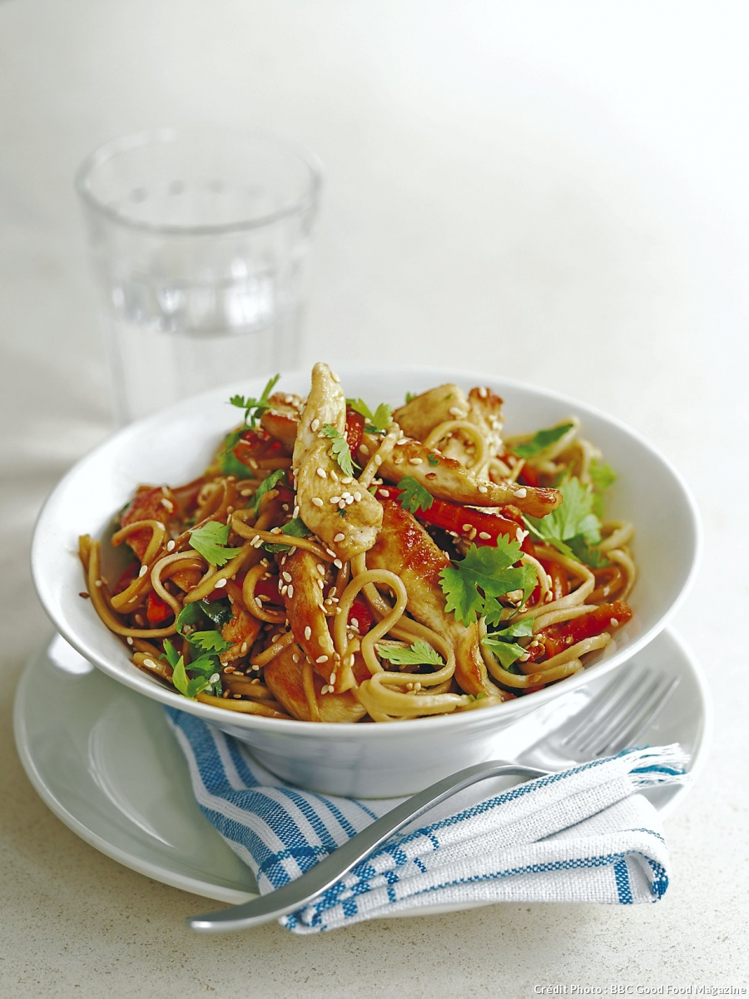
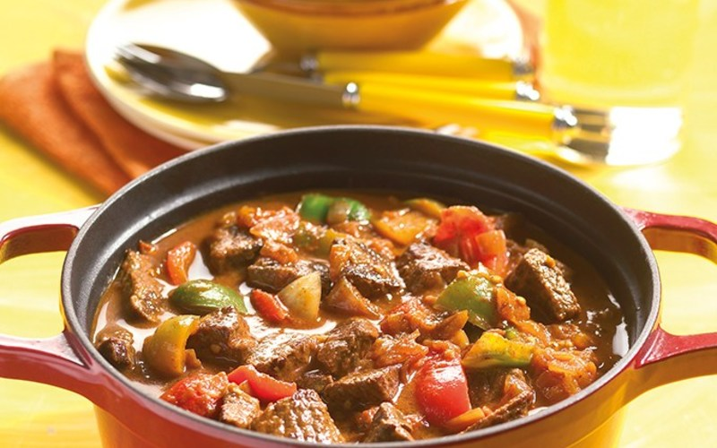
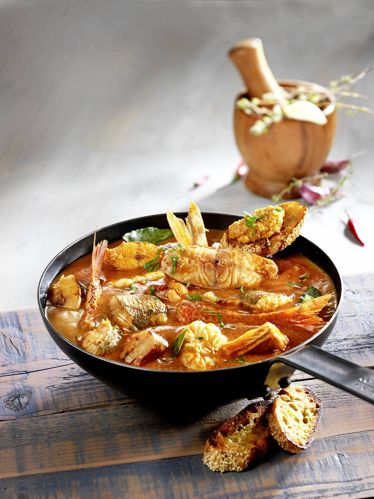
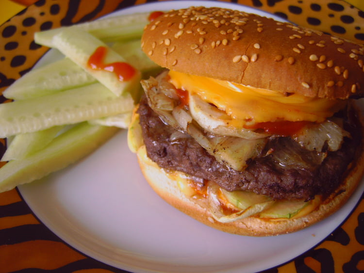
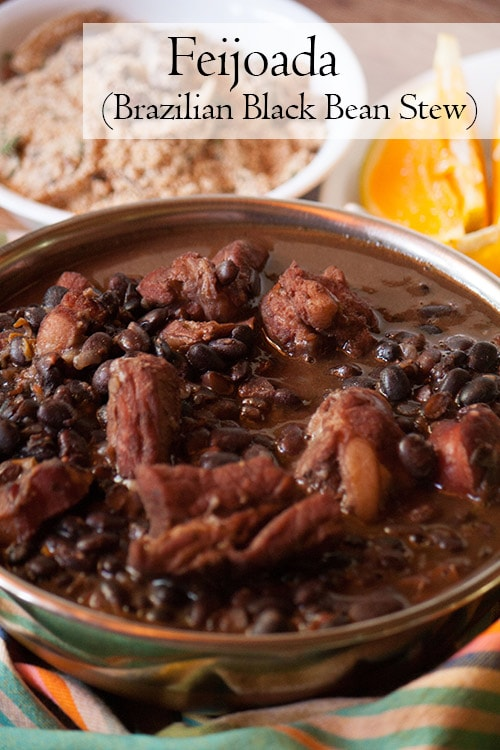

-->
-->
Japon: Recette de SUSHI
- Ingredients:
- Riz à grains courts
- 25 cl de vinaigre de riz
- 2 cuillères à soupe de sucre
- 12.5 cl de dashi - bouillon
- 6.5 cl de vin mirin ou de saké
- 1 pavé de saumon
- 1 pavé de thon
- Rouget
- Maquereau
- Wasabi
Recette
- Préparer d'abord le riz vapeur : laver 3 1/3 tasses de riz à l'eau froide et laisser égoutter pendant 1 heure.
- Mettre le riz dans une casserole, verser 1 litre d'eau, porter à ébullition sur feu moyen, couvrir et cuire à feu vif pendant 2 mn. Réduire le feu au minimum et continuer la cuisson 20 mn.
- Ouvrir, déposer un linge sur le riz, refermer et laisser reposer 15 mn.
- Finition du riz pour les sushi et les maki:
- dans une petite casserole, verser 6 cuillères à soupe de vinaigre de riz, 5 cuillères à soupe de sucre et 4 cuillères à café de sel.Faire chauffer quelques secondes pour faire dissoudre le sucre.
- Verser doucement le vinaigre de riz dans le riz cuit encore chaud, mélanger et détacher les grains doucement à l'aide de baguettes.
- Ensuite, au travail ! Le principe de base est de former de petites boules de riz préparé à sushi
- - chacune équivalent à 50 ml
- Appliquer une très légère pointe de wasabi entre le riz et le poisson.
- Déposer dans la main, mettre le poisson et autres préparations dessus
- mouler doucement le poisson sur le riz en aplatissant le tout. Déposer sur un plateau.
- Enrouler un morceau de feuille de nori autour (facultatif).
- Nouer une tige de ciboule pour faire de chaque sushi un petit cadeau (facultatif).
- Suzume-sushi - au rouget, au maquereau :
- Préparer le poisson, saupoudrer d'une bonne pincée de sel et laisser reposer 10 min. (shimeru). Passer le poisson à l'eau froide pour enlever le sel, déposer dans une marinade et laisser reposer 30 mn.
- Sushi au thon ou au saumon :
- Tailler le poisson cru en fines tranches qui épouse la forme de feuille ou de pétale. Déposer sur 4 boules de riz aplaties en longueur en forme de feuille - soit une extrémité ronde et une extrémité pointue.
- Présenter dans une assiette 4 sushis - les 4 extrémités rondes doivent se toucher au centre de l'assiette. Saupoudrer le centre d'un jaune d'oeuf cuit dur et émietté pour symboliser le pollen de la fleur.
- Servir avec du gingembre mariné, du wasabi et de la sauce soja.
Chine: Recette de nouilles sautées au poulet

- Ingredients :
- Pour vos nouilles sautées au poulet:
- 125 g Nouilles chinoises
- 2 Carottes taillées en bâtonnets
- 250 g Blancs de poulet en lamelles
- 2 Gousses d’ail écrasées
- 1 c. à soupe Huile de tournesol
- 2 c. à café Huile de sésame
- 1 c. à soupe Sauce soja
- 2 c. à soupe Graines de sésame grillées
- Coriandre fraîche
Recette:
- Faire bouillir de l'eau avec du sel
- Ajouter les pates dans l'eau bouillante pour les faire cuire
- chauffer l’huile d’olive dans un wok et faites dorer le poulet.
- Ajoutez l’ail et les bâtonnets de carotte, faites sauter 3 min puis couvrez et laissez cuire 5 min à feu doux
- Égouttez les pâtes et les faire revenir dans le wok
- Arrosez de sauce soja et de l’huile de sésame
- Parsemez de graines de sésame et de coriandre ciselée
Hongrie: goulash

- Ingredients:
- 1 kg de viande de boeuf (paleron, macreuse, gîte)
- 50G de margarine
- 2 Poivrons ( vert & rouge)
- 4 carottes
- 4 pommes de terres
- 2 oignons
- un petit pot de concentré de tomate
- 2 bouillon cube saveur boeuf
- 2 C à S de paprika
- 30g d'olives vertes
Recette:
- Commencez par couper la viande en cubes assez gros.
- Epluchez et émincez les oignons.
- Nettoyez et coupez les poivrons en morceaux.
- Eplucher les oignons et ciselez les
- Faites fondre la margarine dans une cocotte ou un faitout.
- Une fois la margarine est fondue, faites revenir les oignons et les poivrons.
- Quand les oignons sont transparents jetez-y la viande
- Quand la viande est brunie, ajoutez le concentré de tomate ainsi que le paprika, salez.
- Laissez cuire à feu doux pendant 20 à 25 min en veillant bien à ce que la préparation ne brûle pas au fond.
- Pendant ce temps, épluchez les carottes et coupez-les en rondelles.
- Faites de même avec les pommes de terre, coupez les en cube assez gros
- Faites cuire à part les pommes de terre dans un grand volume d'eau
- Ajouter les carottes
- Verser un grand volume d'eau ( réutiliser l'eau qui a servit à cuire les pommes de terre)
- Terminer en ajoutant les 2 bouillons cube saveur boeuf sans oublier d'y incorporer les olives vertes
- Laisser mijoter à feux doux pendant 4 heures.
- Une fois que les 4 heures sont passées, server avec la garniture de votre choix
- c'est encore meilleur le lendemain!!
France: Bouillabaisse

- Ingredients:
- 2 foies
- 2 parures réservées au poissonnier
- 5 belles tomates mûres
- 4 gros oignons
- 1 blanc de poireau
- 1 bulbe de fenouil
- 1 piment rouge
- 5 brins de persil plat
- 4 brins de thym
- 2 feuilles de laurier
- 10 grain(s) de poivre
- 2 cuillères à soupe de gros sel
- 1 foie
- 2 parures (réservées au poissonnier)
- 5 belles tomates mûres
- 4 gros oignons
- 1 blanc de poireau
- 1 bulbe de fenouil
- 1 piment rouge
- 5 brins de persil plat
- 4 brins de thym
- 2 feuilles de laurier
- 10 grains de poivre
- 2 cuillères à soupe de gros sel
- 1 cuillère à café de safran
- 250 ml d’huile d’olive
- 5 tranches de pain de campagne grillée(s) et ailée(s)
- 12 gousses d’ail
- 50 ml de lait
- 1 tranche(s) de pain cuillère à café de safran
- 250 ml d’huile d’olive
- 5 tranches de pain de campagne grillées et ailées
- 12 gousses d’ail
- 50 ml de lait
- 1 tranche de pain de mie
Recette
- Ébouillanter les tomates 30 secondes
- Peler sous l’eau froide, épépiner et concasser.
- Peler et hacher les oignons et l’ail (8 gousses)
- Nettoyer et émincer le poireau et fenouil.
- Verser le tout dans une grande cocotte
- Ajouter les parures de poisson, le gros sel, l’huile, le persil haché, le thym et le laurier.
- Cuire à couvert 15 minutes, en remuant de temps en temps.
- Pendant ce temps, porter à ébullition 2,5 litres d’eau puis verser dans la cocotte.
- Mettre le feu au maximum et cuire 20 à 25 minutes.
- Saler, poivrer et passer la soupe au chinois, en écrasant les ingrédients avec une fourchette.
- Ajouter le safran dans le bouillon, remettre sur le feu et cuire les poissons, 4 à 5 minutes, à petite ébullition.
- Retirer les poissons sauf le congre et continuer la cuisson encore 5 minutes.
- Éteindre le feu, retirer le congre et réserver tous les poissons au chaud.
- Préparer la rouille : tremper le pain dans le lait.
- Éplucher, dégermer et écraser l’ail (4 gousses) dans un mortier avec le piment épépiné et haché.
- Ajouter l’huile, le pain essoré, sans cesser de piler, saler et poivrer.
- Si la rouille est trop épaisse, ajouter 1 cuillère à soupe de bouillon de poisson.
Amérique: steak frites

- Ingredients:
- 2 pains spécial hamburger de grande taille
- 2 steaks hachés
- 1 oignon
- 4 tranches de cheddar
- 1 concombre
- Savora (ou moutarde)
- ketchup
- sel, poivre
Recette:
- Préchauffer le four à 160°C.
- Poser les tranches de pain dans un plat, faces retournées.
- Étaler dessus la Savora et le ketchup.
- Déposer les tranches de fromage. Enfourner 5 minutes.
- 2Cuire les steaks 5 minutes avec les oignons puis saler et poivrer.
- 3Poser les oignons et la viande dans le pain, mettre à nouveau de la Savora et du ketchup à l'intérieur.
- Refermer les pains.
- 4Enfourner le tout pendant 10 minutes.
- Pour finir: Couper en frites le concombre puis disposer dans l'assiette. Servir chaud.
Bresil: Feijoada

- Ingredients:
- 1kg de haricots noirs secs (trempés pendant la nuit) *
- 1 cuillère à soupe d'huile d'olive
- 4 onces de bacon (sans la couenne), coupé en dés
- 1 livre de côtes de porc, coupées en côtes individuelles
- 2 saucisses de chorizo mexicain, tranchées
- 1 saucisse fumée, telle que linguica ou kielbasa, tranchée
- 1 gros oignon, haché
- 4 gousses d' ail émincées
- 3 tomates coupées en dés
- 1 cuillère à café de sel
- 1 cuillère à café de poivre noir moulu
- 3 feuilles de laurier
- l'eau
- blanc (pour servir)>
- farofa (pour servir)
Recette:
- Dans un grand bol avec de l'eau, laissez tremper les haricots pendant la nuit.
- Lorsque vous êtes prêt à faire votre ragoût, dans une grande marmite à fond épais, à feu moyen, ajoutez l'huile et le bacon.
- Cuire jusqu'à ce que croustillant et transférer dans une assiette.
- Utilisez la même casserole pour dorer les côtes et les saucisses par lots. Mettre de côté.
- Si nécessaire, ajoutez plus d'huile dans la casserole.
- À feu moyen-élevé, faire revenir l'oignon et l'ail jusqu'à ce qu'ils soient tendres et translucides, environ 5 minutes.
- Ajouter les tomates et cuire encore 3 minutes.
- Égoutter et rincer les haricots trempés.
- Ajoutez-les à la casserole avec les côtelettes, le bacon, les saucisses, le sel, le poivre et le congé de laurier.
- Couvrir d'eau (environ 8 tasses).
- Amener le mélange à ébullition et réduire le feu à doux.
- Couvrir et laisser cuire pendant 2 à 2 heures et demie ou jusqu'à ce que les haricots soient tendres.
- Si le ragoût est trop liquide, découvrez la casserole et laissez cuire encore 20 minutes pour permettre à une partie du liquide de s’évaporer.
- Servir avec du riz blanc et saupoudrer de farofa.